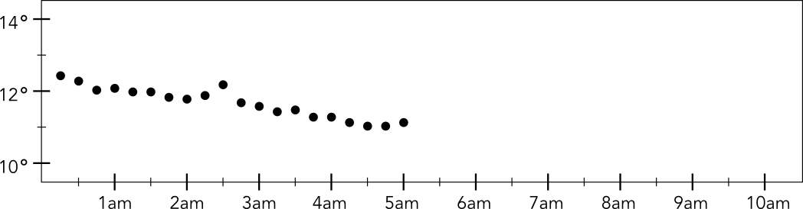
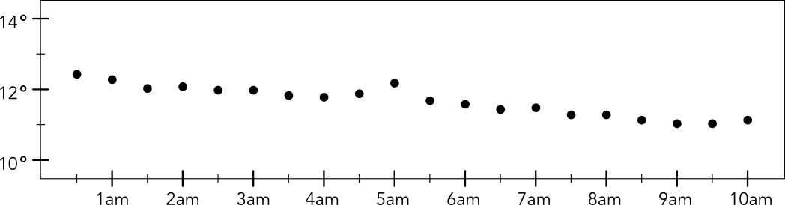
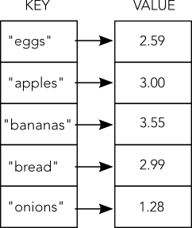

CT-STEM
Computational Thinking in Science, Technology, Engineering, and Mathematics
Computer Science Skills
Version 0.1


Student Information
| (check all that apply) | ||
|
Native American Pacific Islander Asian American White (Caucasian) |
Mexican American or Chicano Puerto Rican Other Latin American Black or African American |
|
repeat 20 times:
pause-seconds(450)
record-temperature
- 
- 


| Year | Month | Bird_ID | Sex | Beak_Size (mm) |
|---|---|---|---|---|
| 2008 | 01 | F113 | Male | 10 |
| 2008 | 01 | F119 | Male | 6.2 |
| 2008 | 02 | F215 | Female | 11.1 |
| 2008 | 03 | F085 | Female | 4.9 |
| 2008 | 03 | F072 | Female | 6.6 |
| 2008 | 03 | F115 | Male | 6.8 |
| 2008 | 05 | F022 | Female | 10.2 |
| 2009 | 04 | F113 | Male | 10.1 |
| 2009 | 04 | F119 | Male | 6.2 |
| 2009 | 05 | F215 | Female | 11 |
| 2009 | 05 | F085 | Female | 5.1 |
| 2009 | 05 | F072 | Female | 6.4 |
| 2009 | 05 | F115 | Male | 6.9 |
| 2009 | 06 | F022 | Female | 10.25 |
| 2010 | 01 | F113 | Male | 10.2 |
| 2010 | 01 | F119 | Male | 6.3 |
| 2010 | 02 | F215 | Female | 11.4 |
| 2010 | 03 | F085 | Female | 5.1 |
| 2010 | 03 | F072 | Female | 6.8 |
| 2010 | 03 | F115 | Male | 8 |
| 2010 | 05 | F022 | Female | 10.4 |
sum = 0
count = 0
for each row in table:
if (row.Year = 2008) and (row.Sex = "Male") then:
sum = sum + row.Beak_Size
count = count + 1
print sum / count
- Counts all birds measured in 2008
- Counts all male birds measured in 2008.
- Computes the standard deviation of male beak size in 2008.
- Computes the average beak size of male birds measured in 2008.
Line 1: maximum = 0
Line 2: for each row in table:
Line 3: if (row.Year >= 2008) or (row.Year <= 2010) then:
Line 4: if (row.Beak_Size > maximum)
Line 5: maximum = row.Beak_Size
Line 6: print maximum
A team of engineering students is building an autonomous robot for a contest. To win, they must program their robot to move around a grid while avoiding obstacles. The robot moves exactly one square at a time either up, down, left, or right.
The team started by writing this program to move their robot.
move-up
move-right
move-up
move-right
move-right
- Square A
- Square B
- Square C
- Square D
move-up
move-right
move-up
move-up
- Square A
- Square B
- Square C
- Square D
 The team of engineering students added sensors to their robot to help
it avoid obstacles (shown as grey squares on the grid). Then they wrote
this program:
The team of engineering students added sensors to their robot to help
it avoid obstacles (shown as grey squares on the grid). Then they wrote
this program:
if obstacle-left then:
move-right
if obstacle-up then:
move-down
if obstacle-right then:
move-left
if obstacle-down then:
move-up
- Square A
- Square B
- Square C
- Square D
if obstacle-left then:
move-right
else if obstacle-up then:
move-down
else if obstacle-right then:
move-left
else:
move-up
- Square A
- Square B
- Square C
- Square D
repeat-forever:
move-up
move-right
- Square A
- Square B
- Square C
- Square D
- Square E
repeat-forever:
move-up
repeat-until obstacle-right:
move-right
- Square A
- Square B
- Square C
- Square D
- Square E
move-up move-down move-left move-right obstacle-up obstacle-down obstacle-left obstacle-right repeat-forever: repeat-until if: else if: else:
The team has now tried to get the robot to start avoiding obstacles with this program:
define climb-stair-up:
move-up
move-right
define climb-stair-down:
move-right
move-down
define walk-right:
if obstacle-right then:
climb-stair-up
else:
right
repeat forever:
walk-right
- Square A
- Square B
- Square C
- Square D
- Square E
Data Structures
In computer programming, a data structure is a way of organizing
information. There are many different kinds of data
structures, but two of the most fundamental data structures are lists
and lookup tables. For this test, you will read a brief
description of these two data structures and then answer some questions
about them.
Even if you've never done any computer programming before, there are
important clues on this page that will help you answer the questions.
Lists
A list is a type of data structure that stores information in a sequence in a computer's memory. For example, if you wanted a computer program to keep track of items in an online shopping cart, you might place each item in a list.
A list is a good data structure if you need to process many items one at a time. It is also efficient to retrieve the item stored at a particular position in the list. For example, this computer code would get the item at position 4 in the shopping cart.
print shopping-cart[4]
However, lists are not efficient for searching for an item if you don't know its position ahead of time. To search in a list you would have to write a program to examine every item, one at a time.
Lookup Tables
 A lookup table is a type of data structure that stores items by names (or key) rather than by position. Each entry in a lookup table consists of a key and a value. For example, you might want to store the cost of each item in your shopping cart. This computer code would print out the cost of an apple in your cart.
print shopping-cart["apple"]
With a lookup table it is efficient to find an item by its name.
However, unlike a list, the items are not stored in any particular
order.
- A list because the order of the measurements is important.
- A lookup table because it is efficient to look up a measurement by its name or key value.
- A list because it is good for processing each measurement one at a time.
- A lookup table because the order of the measurements is not important.
- A list because the order of the stars is important.
- A lookup table because it is efficient to look up a star by its name or key value.
- A list because it is good for processing each value one at a time.
- A lookup table because the order of the values is not important.
count = 0
for each time in flower_times:
if time <= 10 then:
count = count + 1
print count
- A lookup table because he's looking up each item by name.
- A list because he's looking up each item by position.
- A lookup table because the order of the items is not important.
- A lookup table because lists are not efficient for searching for items if you don't know their posistions ahead of time.
Congratulations!
You're finished. Use any remaining time to go back and check your answers.
CT-STEM Skills Taxonomy
Skills from Computer Science
- Interpreting Instructions Written for a Computer
- Defining Instructions for a Computer
- Developing Modular Computational Solutions
- Choosing Effective Computational Tools
- Applying Conditional Logic
- Effectively Using Recursion and Iterative Logic
- Creating Abstractions
- Choosing Efficient Data Structures